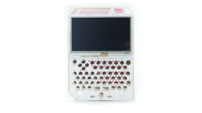
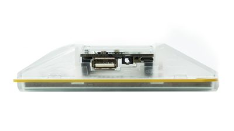
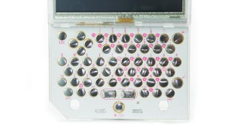
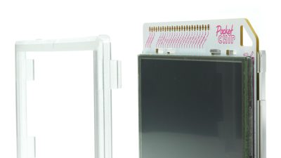
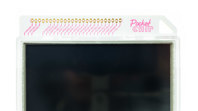
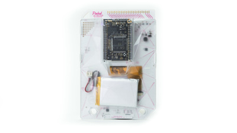
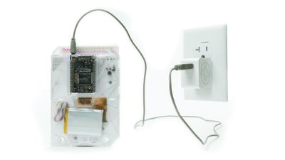
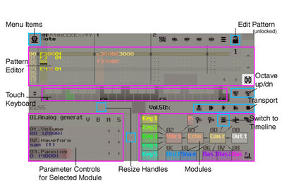
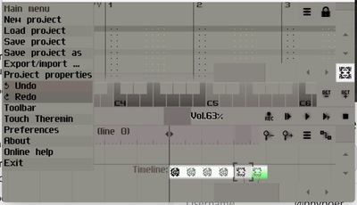

Welcome to Next Thing Co. PocketC.H.I.P. documentation.
When we made C.H.I.P., the $9 computer, many people thought it came with a screen and keyboard. At the time it did not, but it made us think, what if we did build a product with a screen and keyboard that used C.H.I.P.. We did, it’s PocketC.H.I.P..
This section explains how to turn on and charge PocketC.H.I.P., plus quickly configure WiFi. There’s a lot more you can do with PocketC.H.I.P. too, so check out the other sections of this document for further instructions.
Turn on PocketC.H.I.P. by holding down the Home/Power button at the bottom, middle of the keyboard, for TKTK seconds.
PocketC.H.I.P. will take a moment to start, but while it does it shows TKTK. Once it is done loading, you will see a screen with 6 icons. This is the HOME screen.
Use a finger or stylus to tap on the application you want to use. Press gently enough to make contact with the screen. There’s no need to
ANNOTATED IMAGE of HOME screen w/ numbers calling out each icon
Tap the down arrow at the bottom center of the screen to see more applications. For more on specific applications, see the apps section of this document.
While using an application, press the HOME/Power button to return to the HOME screen.
From the HOME screen, tap the WiFi icon in the top left corner to access the Settings screen. Then slide the switch next to the WiFi icon to the right to turn the wifi on. Tap the button to the right of the Wifi switch to select your network.
Then tap on the network you want to join. If needed slide your finger up and down on the list to scroll.
When prompted, enter the network password in the text field, then touch the [Connect] button. It may take a few seconds to connect. Troubleshooting
If PocketC.H.I.P. becomes unresponsive, hold down the Home/Power button for 8 seconds. This will terminate the battery power to PocketC.H.I.P. causing a hard-shutdown. Only use this shutdown method if no other shutdown methods work.
NOTE Label the following: screen, qwerty keyboard, HOME button. This section should mostly be visual with labels
SHOT Back Label chip ports 

IMAGE finger touching the SCREEN
PocketC.H.I.P. features a 4.3" display made up of 470 x 272 pixels. The display is resistive touch and responds to tapping and sliding. You can use a finger or, for more precision, try a non-marking stylus.
Tap once to open apps, press buttons, and close windows. Press and slide to scroll, adjust sliderbars, and resize windows.

PocketC.H.I.P. has a full QWERTY keyboard with comfortably located arrow keys for gaming.
TK
Each button is labeled with pink text. This signifies the default button behavior. Some buttons have two rows of pink text stacked atop each other. The bottom label is the primary behavior of the key. The top label identifies the button’s secondary behavior, which is accessible by holding down SHIFT and pressing the button.
For example: SHIFT+1 prints !
An even smaller number of buttons are labeled to the top-left with white text on a pink background. Examples are the function keys (F1, F2,…F11) and lesser used punctuation marks. To type them, hold down FN key and press the desired button.
For example: FN+J prints >
Placeholder
Give your hands a break! You can prop PocketC.H.I.P. up on a table with a pencil or pen. Pencils go in the right-hand-side pencil hole, and pens in the left hole. You only need one.
 To fully disassemble PocketC.H.I.P., first remove the bezel (frame) around the perimeter of the screen. Make sure that C.H.I.P. is removed from PocketC.H.I.P.. Remove the back case of PocketC.H.I.P. by pressing the tabs above the screen and on either side of the Home/Power button..
While the case is open, check out the “secret” prototyping area and GPIO solder pads inside the enclosure!
 Along the top edge of PocketC.H.I.P. are the exposed C.H.I.P. input and output pins. These are great for attaching and controlling sensors, motors, and LEDs. See C.H.I.P. documentation to learn how to use them.

IMAGE OF PCHIP REAR WITH CLEAR CASE AND SHOWING BATTERY Your PocketC.H.I.P. battery should last for about five hours of use. To increase battery life, dim the screen brightness and turn off WiFi.
The top right corner of the screen shows your battery level.

To charge your PocketC.H.I.P., plug C.H.I.P. into a 5-volt 1A power supply with a USB-micro cable.
C.H.I.P. must remain attached to PocketC.H.I.P. to charge the battery.
(add list)
To put PocketC.H.I.P. into a low power, sleep state, press the power icon in the bottom left corner of the home screen and select sleep. Without PocketC.H.I.P. will
To shutdown PocketC.H.I.P., press the power icon in the bottom left corner of the home screen and select shutdown. If PocketC.H.I.P. becomes unresponsive, you can also shutdown PocketC.H.I.P. by holding down the HOME/Power button for 8 seconds. This will terminate the battery power to PocketC.H.I.P. causing a hard-shutdown. Only use this shutdown method if all other shutdown methods do not work.
To update the software on PocketC.H.I.P., tap the Update Software app on the home screen. Each of these applications is curated to run on PocketC.H.I.P.’s screen size and theme.
Performing a full system update will overwrite all data on PocketC.H.I.P. TKTK
To return your PocketC.H.I.P. to our latest factory settings, use our online flashing tool and select the latest PocketC.H.I.P. image.
WARNING: This will permanently delete all the data on PocketC.H.I.P., so back-up anything you want to keep!
See the CHIP docs for how to backup your files manually.
Your PocketC.H.I.P. comes with TK applications on the home screen.
Pico-8 is a virtual console that allows you to run games created by members of the Pico-8 community, modify their games, or create games of your own. This means that opening Pico-8 is like starting up a tiny computer inside your computer. Pico-8 runs on “carts” (files that act like old video game cartridges). There are two main ways to find and play carts in Pico-8: Splore mode and standard mode. Splore mode To reach splore mode from the command line, type ‘splore’. This launches an explorer that browses the games currently in the system. If PocketCHIP is connected to the internet, the explorer can also be used to browse and download games from the Pico-8 community. Navigate the menus using the arrow keys, and press enter to select a game.
Pico-8’s standard mode is a command line interface. Possible commands are listed below Help lists the available commands dir list the contents of the current directory cd [directory name] change to the desired directory cd .. go up a directory cd / change back to top directory (on pico-8’s virtual drive) mkdir make a new directory folder open the current directory in the host operating system’s file browser load [name of game] load a game from the current directory (this is like putting a cartridge into the console) run plays the cart that is currently loaded save [file name] saves the currently loaded cart with the given name (this is used when you’ve made changes to the game’s code, graphics, or music)
For more great games, look no further than the Pico-8 community. Game cart files are stored in Pico-8’s bulletin board system and can be downloaded and saved to the Pico-8 folder.
Need a gif that is in PC aspect ratio
Gamers get ready to become game developers. With the fantasy console Pico8 you play, program, and compose music all in one app.
Image describing the different Pico-8 modes: see fan zine issue 1
PICO-8 is a single application with TK different modes. It starts in command mode, where you can interact with files (load, save, run). Command mode is a lot like a the terminal application on PocketC.H.I.P., except it has far few commands.
Pico-8 displays capital letters for all text, but you don’t have to. Just type lowercase, Pico-8 will handle the rest.
Type in the following italicized text and press the return button. load cartname run cartname
Note: You must load a cartridge before you can use the run command.
Access the code editor from the command mode by press ESC. If you are in the middle of a game you’ll need to hit ESC twice. Some other helpful shortcuts are:
Hold shift to select multiple characters or lines (or click and drag with mouse)
Pro Tip: if you’re working on a complex game, you may find it easier to open the cart outside of Pico-8 in a text editor. Check out TKTK for an example.
The code editor is not the only editor in Pico-8. While you’re in the code editor, look at the icons across the top of the screen. These are tappable Access the other editors by clicking on the icons in the upper right hand corner of the editor.
Image of the editor icons highlighted
Image of the sprite editor button
Image of sprite editor screen Use the sprite editor to create the artwork that make up tiles, characters, or other elements of the game. The navigator at the bottom of the sprite editor screen shows a 8x8 pixel box that is displayed in the sprite sheet window, but it is possible to use freeform tools (pan, select) to edit larger areas.
Use the following tools to edit sprites:
Click on the desired color and then click in the editor window to apply the color to each pixel Hold LCONTROL and click on a pixel to replace all of the same-colored pixels in the window with the selected color
Select an area of the sprite sheet that you want to copy using the select tool Select the stamp tool and click the location where you want the copied pixels to be pasted Hold LCONTROL to stamp with transparency (this pastes all of the non-black pixels in the selection)
Click and drag with the select tool to highlight an area of the sprite sheet Enter or click to select none * Pan Tool // shortcut: space * Click and drag to move around the sprite sheet * Fill Tool Fill an area with the selected color If you have selected an area of the sprite sheet, the fill will be limited to the selected area If no selection is active, the fill will be limited to the area in the editor window Map Editor The tools for the map editor work similarly to those in the sprite editor. However, rather than choosing colors and drawing directly on the map sheet, select a sprite and use the draw or fill tool to place sprites into the map sheet.
Pico-8’s sound editor has two view modes: graph view and tracker view. Switch between modes by clicking on the graph and tracker buttons in the upper-left corner of the sound editor.
In both views, the number in the top left, under the view selector is the sound effect number. Pico-8 can handle 64 different effects.
Change the speed of the sound by clicking on the number in the box labelled SPD. Left clicking increases the value and right clicking decreases the value. The SPD value describes the duration of each note, so the higher the value, the slower the sound will play.
The LOOP values define the start and end points of a section of the sound effect that repeats.
Select from the 8 available instruments by clicking on the gray waveform boxes below the SPD and LOOP fields.
Press the spacebar to play/stop the current sound effect.
Graph mode In graph mode, choose an instrument and then click and drag to “draw” the sound across the pitch window from left to right. Drawing higher in the window creates a sound with a higher pitch. To adjust the volume of each note, raise or lower the sliders in the volume window at the bottom of the graph mode screen.
In the tracker mode, each line of 6 dots represents a note. Each dot represents an aspect of the notes. In order (from left to right) they are:
Frequency (first 2 dots) Denoted by the letter of the musical pitch To input the pitches, use the q2w3er5t6y7ui keys like a piano Q is a ‘C’ note, W is a ‘D’ note The number keys are the sharps and flats (like the black keys on a piano) Octave For each note, choose octave 1, 2, 3, or 4 in the OCT field at the top, or type the corresponding number 1 is the lowest octave and 4 is highest Instrument Choose one of the instruments in the gray waveform boxes or type the corresponding number (0 through 7) Volume Choose volume level in the VOL field or type the corresponding number (0 through 7) Effect Choose an effect from the boxes under the instruments or type the corresponding number (0 through 7) The 8 effects are 0 none 1 slide 2 vibrato 3 drop 4 fade in 5 fade out 6 fast arpeggio 7 slow arpeggio Music Editor To combine the sound effects to make music, the music editor allows up to four effects at a time. Click on the boxes above each column to activate the track and choose which effects will be included in each song pattern.
Patterns can be set to move to the next pattern, repeat the current pattern, or stop when finished with the arrow and stop icons on the upper right.
Pico-8 can hold up to 64 song patterns.
The SunVox tracker is a fully featured music production studio that works on more platforms than you could imagine. It’s lightweight, sounds great, and is designed to work on with a stylus on a single, small screen. As a result, it’s a great fit for PocketCHIP for making music and playing with sound. Launch SunVox, put on some headphones, press F9 to start playback, and dive into a complete world of electronic sound.
Here’s a quick overview of what you see when you launch SunVox, and what the different parts of the interface do. Visit the complete manual for more information, including complete keyboard mappings.

Add notes and note modifiers to compose patterns. Spacebar toggles edit mode on and off, use the arrow keys to select rows, use letters to enter notes, use numbers to enter (hexadecimal) values for velocity, module, and control values.
Touch Keyboard - Tap keys to play the selected module and/or add notes to a Pattern.
Parameter Controls - Move the horizontal sliders to change the sound of a module.
Resize Handles - Tap-and-drag in these areas to resize the panels.
Modules (synths and effects) - Tap on a module and use the Parameter Controls on the left to modify the sound. Use CTRL-arrows to jump to different modules. Shift-drag to connect and disconnect modules. Tap in blank space to add a module.
Switch To Timeline - Tap this button to switch the bottom view to the Timeline, where you can arrange, clone, copy, and paste your patterns into a song.
Transport - Record new pattern into timeline, Play from beginning, Play, Play pattern, Stop.
Octave Up/Down - Change the octave of the touch keyboard.
Edit Pattern Indicator - When locked, you can’t make changes to the Pattern. Space bar unlocks the world of Pattern Editing!
Volume - Tap-and-drag the volume control to change output volume.
Menu Items - Sunvox has one simple menu. Tap here to save and load projects, set preferences like MIDI controllers, and so on.
If you tap the “Switch To Timeline” button, you’ll get the timeline view:

Don’t miss the ultra-fun Touch Theremin feature! Select it in the Menu, and start making some noise!
The help app is a portable version of the document you are reading right now.
PocketC.H.I.P. input and output ports are all handled by C.H.I.P.. Chances are good that if a peripheral works with C.H.I.P., it will work with PocketC.H.I.P..
image of chip’s ports while in pocketchip or things attached to pocketchip
To input or output audio from PocketC.H.I.P. use the TRRS jack on C.H.I.P..
There are two different USB ports on PocketC.H.I.P.: micro USB and standard USB.
Use the micro usb port for charging PocketC.H.I.P. with a 5-volt, 1-amp power supply.
Use the standard USB port for attaching whatever sort of USB device you can think of. Be aware that attached USB devices take power to operate. If they are not independently powered, they will reduce the battery life of PocketC.H.I.P. or cause its operation to become sporadic.